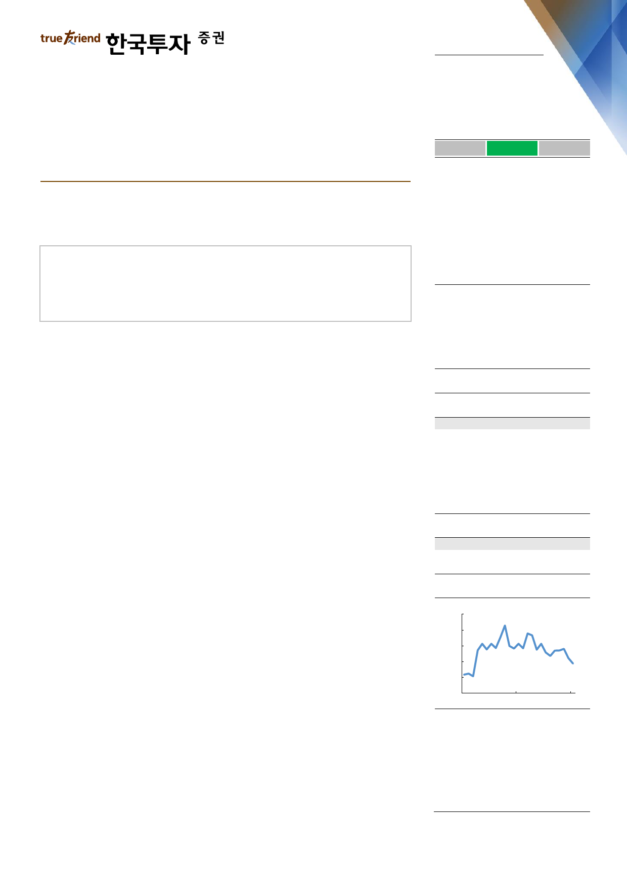

실적 Review
2018. 11. 14
팬오션(028670)
하 회
부 합
영업이익의 컨센서스 대비를 의미
상 회
양호한 실적, 아쉬운 BDI
3분기 영업이익은 벌크 부문의 시황개선으로 시장 기대에 부합
단기적으로 시황 불확실성 커져 4분기 성수기 효과 기대하기 어려운 상황
환경규제 영향으로 중장기 벌크선 수급개선 여전히 유효해 ‘매수’ 의견 유지
Facts : 3분기 영업이익은 컨센서스에 부합
매출액은 7,715억원으로 전년동기대비 32% 급증했고 영업이익은 575억원으로
10% 늘었다. 매출액은 컨센서스를 13% 상회했고 영업이익은 시장 기대에 부합
했다. 벌크해운 시황이 개선되면서 3분기 평균 BDI(벌크선 운임지수)는 1,607p
로 전년동기대비 41% 상승했다. 이에 따라 벌크부문의 매출액과 영업이익은 각각
25%, 21% 증가했다. 다만 비벌크 사업의 수익성은 계속 부진했다. 시황이 좋지
않았던 탱커부문은 10억원 영업적자로 전환했고 컨테이너선 영업이익은 전분기대
비 65% 급감했다. 한편 곡물부문은 계절적 성수기를 맞이해 매출액이 전년동기의
두 배로 커졌지만 여전히 적자기조가 이어졌다.
Pros & cons : 중장기 수급개선 기대되나 단기 시황 불확실성 부담
단기적으로 성수기 효과를 기대하기 어려운 상황이다. 기대보다 약했던 수요에 더
해 호주 BHP 철도 탈선사고 등 악재가 겹쳤다. BDI는 11월 들어서만 300p 이상
빠져 현재 1,100p대로 내려왔다. 팬오션 역시 4분기에는 보수적으로 선대를 운영
할 수밖에 없다. 다만 2019년 시황개선에 대한 기대감은 여전히 유효하다. 선박
인도량은 올해보다 늘어나지만, IMO 환경규제에 대비하는 과정에서 수반되는 노
후선박 폐선 확대와 가동일수 감소가 시황에 더 긍정적일 전망이다. 한편 팬오션
은 벌크사선 15척에 대해 scrubber 설치계획을 확정했다. 도입 예정인 선박에 대
해서도 화주와의 협의 아래 선제적인 대응을 준비하고 있다.
Action : 초점은 BDI에서 장기운송계약 모멘텀으로 이동
단기 BDI 상승 수혜에 대한 눈높이를 낮춰야 하지만, 내년부터 다시 순차적으로
신규 CVC 계약이 추가된다는 점에서 이익 모멘텀이 재개되는 국면이다. 2019년
말까지 사선은 6척 추가돼 86척으로 커질 전망이다. 팬오션에 대해 '매수' 의견과
목표주가 7천원(2019F PBR 1.3배에 해당)을 유지한다. IMO 규제는 일시적으로
불확실성을 키울 수 있지만, 수요에 대한 영향보다는 공급제약으로 이어질 가능성
이 크기 때문에 운임 상승에 긍정적일 것이다.
매수(유지)
목표주가: 7,000원(유지)
Stock Data
KOSPI(11/13)
주가(11/13)
시가총액(십억원)
발행주식수(백만)
52주 최고/최저가(원)
일평균거래대금(6개월, 백만원)
유동주식비율/외국인지분율(%)
주요주주(%) 하림지주 외 30 인
국민연금
2,071
4,495
2,403
535
6,130/4,385
8,190
45.1/9.7
54.9
5.8
Valuation 지표
PER(x)
PBR(x)
ROE(%)
DY(%)
EV/EBITDA(x)
EPS(원)
BPS(원)
2017A
19.7
1.2
5.8
0.0
10.5
268
4,469
2018F
14.5
0.9
6.7
0.0
9.1
309
4,778
2019F
12.8
0.9
7.1
0.0
8.2
350
5,129
주가상승률
절대주가(%)
KOSPI 대비(%p)
1개월
(7.6)
(3.4)
6개월
(18.9)
(2.5)
12개월
(7.8)
10.3
주가추이
(원)
7,000
6,200
5,400
4,600
3,800
3,000
Nov-16
자료: FnGuide
Nov-17
Nov-18
최고운
gowoon@truefriend.com